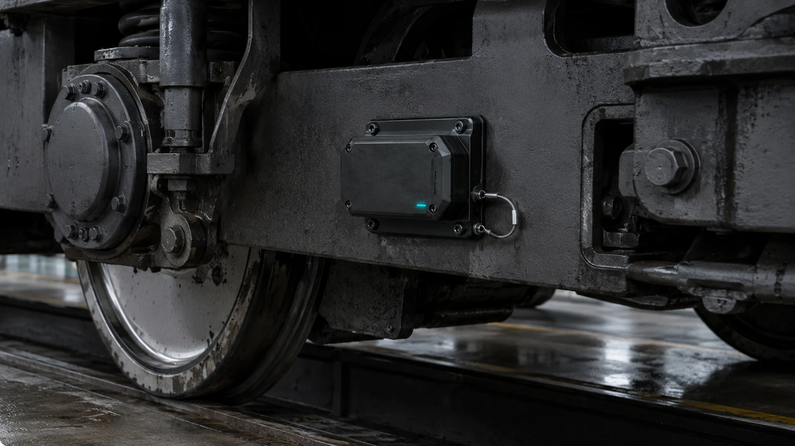

Train-mounted edge intelligence
Train Node
A compact bogie- or underframe-mounted platform designed to turn each journey into a measured view of vehicle and infrastructure behaviour. The first-generation system is entering the final stages of development and testing.
- Sensing of vertical, lateral and longitudinal acceleration, vibration, orientation, location, rail temperature and track-geometry indicators.
- Onboard processing to time-align data, identify abnormal events and securely transmit prioritised intelligence while retaining a complete journey record.
- Repeat-journey comparison to help localise rough riding, investigate developing conditions and assess engineering interventions.
Optional and future sensing: an optional rail-facing camera links visual evidence to location and ride events. Future packages are intended to assess railhead condition, contamination and potential adhesion risk.
Development programme Engineering validation and required railway approvals are targeted for completion by the end of 2026. Initial market testing is planned for Q1 2027.
Discuss Train Node →